Quei de la Stadera
Chi Siamo
Foto Band

Siamo i Quei de la Stadera. Portiamo sul palco la tradizione e la vita milanese con sonorità moderne ed energiche. Canzoni che parlano di storie vere, di quartiere e di una Milano da riscoprire nota dopo nota, parola dopo parola.
Scaletta Live
16 Giugno Mr. Fantasy
Dòpo el pont che va giò a l'Ortiga
Dopo il ponte che va giù all'Ortica,
dove ona vòlta gh'era on quai praa
dove una volta c'era qualche prato
coi sò pegor gh'era la Rita a fai pascolà.
con le sue pecore c'era la Rita a farle pascolare.
On bèll dì ghe va adree on gattin
Un bel giorno le dietro un gattino
senza mama e senza papà
senza mamma e senza papà
e la Rita le ciappa in brasc e le fa ballà.
e la Rita lo prende in braccio e lo fa ballare.
El gattin poggiaa in su ona tètta
Il gattino appoggiato su una tetta
el se tacca e 'l va adree a sciuscià
si attacca e continua a succhiare
ma la Rita la dis nagòtt e le lassa fà.
la Rita non dice niente e lo lascia fare.
On barbon ch'el passava in bici
Un barbone che passava in bicicletta
el se ferma e 'l sta lì a vardà
si ferma e sta lì a guardare
el di adree le saveven tucc finna giò a Lambraa.
il giorno dopo lo sapevano tutti fin giù a Lambrate.
Quand la Rita con 'vert la camisa
Quando la Rita con la camicia aperta
la ghe dava al gattin el so latt
dava al gattino il suo latte
tucc i omen li in gir de l'Ortiga eren la la la la la la la
tutti gli uomini lì in giro per l'Ortica erano lalalalalalala
E siccome che lee la credeva
E siccome lei credeva
ch'eren li per vede doma el gatt
che erano lì per vedere solo il gatto
ie vardava e la ghe sorrideva e la cantava la la la la la
li guardava e gli sorrideva e cantava lalalalala
El barista, el rappresentant,
Il barista, il rappresentante,
el maester col cervellee
il maestro con il salumiere
eren lì insèmma a quatter ghisa cont el barbee.
erano lì insieme a quattro vigili con il barbiere.
El postin che l'è vun ch'el tròtta
Il postino, che è uno che corre,
per vardà el consegnava pù
per guardare non consegnava più
nanca i esprèss, tanto ormai nissun i avaria leggiuu.
neanche gli espressi, tanto nessuno li avrebbe letti.
El sacrista - Dio me ne scampi -
Il sacrista - Dio me ne scampi -
l'era li cont i cereghètt
era lì con i chirichetti
se capiss che anca a 'sti fioeu ghe piaseva i tètt.
si capisce che anche a questi figliuoli piacevano le tette.
A vedè gh'era anca la pola,
A vedere c'era anche la polizia,
ma sta vòlta senza randèll
ma questa volta senza randello
a ghe n'era vun ch'el piangeva, se l'era bèll!
ce n'era uno che piangeva, come era bello!
A on bèll moment i dònn de l'Ortiga
A un certo punto le donne dell'Ortica
s'hinn trovaa senza nanca on òmm
si sono trovate senza nemmeno un uomo
e hann pensaa de fà on bèll còrteo in piazza del Dòmm.
e hanno pensato di fare un bel corteo in Piazza del Duomo.
Poeu pussee infolarmaa de prima
Poi più agitate di prima
hann tiraa su tresent randèi
hanno preso trecento randelli
e hinn partii per fà foeura el gatt e l'hann faa a tocchèi.
e sono partite per fare fuori il gatto e lo hanno fatto a pezzi.
L'è staa inscì che la pastorèlla
È stato così che la pastorella
l'è restada senza el sò gatt
è rimasta senza il suo gatto
el mes dòpo la s'è sposada per consolass.
il mese dopo si è sposata per consolarsi.
E così l'è finida in glòria
E così è finita in gloria
quanto temp l'è passaa giamò
quanto tempo è già passato
gh'è on quai vègg che però sta stòria la cunta anmò.
c'è qualche vecchio che questa storia la ricorda ancora.
Faceva il palo nella banda dell'Ortica,
Faceva il palo nella banda dell'Ortica,
ma l'era sguercio, el ghe vedeva quasi pù:
ma era sguercio, non ci vedeva quasi più:
e l'è staa inscì che i hann ciapaa tucc senza fadiga,
è stato così che li han presi tutti senza fatica,
i hann ciapaa tucc, ma propi tucc, foeura che lù.
li han presi tutti, ma proprio tutti, tranne lui.
Lui era fisso che scrutava nella notte
Lui era fisso che scrutava nella notte
quand gh'è passaa davanti a lù on carabinier,
quando è passato davanti a lui un carabiniere,
insòmma on ghisa, trii carriba e on metronotte,
insomma un vigile, tre carabinieri e un metronotte,
gnanca una piega lú l'ha fà, gnanca un plissé.
neanche una piega lui ha fatto, neanche un plissé.
Faceva il palo della banda dell'Ortiga,
Faceva il palo della banda dell'Ortica,
faceva il palo perché l'era el sò mestee.
faceva il palo perché era il suo mestiere.
Così, precisi come quei della Mascherpa,
Così, precisi come quelli della Mascherpa,
hinn restaa lì i sò amis, a vedè i carabinier,
sono rimasti lì i suoi amici, a vedere i carabinieri,
han detto: «Ma come, porco giuda, mondo cane:
han detto: «Ma come, porco giuda, mondo cane:
il nostro palo, brutta bestia, ma indove l'è?»
il nostro palo, brutta bestia, ma dov'è?»
Lui era fisso che scrutava nella notte,
Lui era fisso che scrutava nella notte,
ha visto nulla, ma in compens l'ha sentù nient,
ha visto nulla, ma in compenso non ha sentito nulla,
perché a vederci non vedeva un'autobotte
perché a vederci non vedeva un'autobotte
però a sentirci el ghe sentiva un accident.
però a sentirci non ci sentiva un accidente.
Ci sono stati pugni, spari, grida e botte,
Ci sono stati pugni, spari, grida e botte,
i han menà via ch'era giàmo' quasi mezzdì.
li hanno portati via che era già quasi mezzogiorno.
Lui sempre fisso, lì, a scrutare nella notte,
Lui sempre fisso, lì, a scrutare nella notte,
perché el ghe vedeva istess de nòtt come del dì
perché ci vedeva uguale nella notte come di giorno.
Ed è li ancora come un palo nella via,
Ed è lì ancora come un palo nella via,
la gente guarda, el ghe dà cent lira e peo la va;
la gente guarda, gli dà cento lire e poi va via;
lui, circospetto, guarda in giro e mette via,
lui, circospetto, guarda in giro e mette via,
ma poi borbotta, perché ormai l'è un pò incazzaa.
ma poi borbotta, perché ormai è un po' incazzato.
E l'è incazzaa con la banda dell'Ortiga
Ed è incazzato con la banda dell'Ortica
perché lui dice: «Non si fa così a rubar».
perché lui dice: «Non si fa così a rubar».
Ma come, a mi me lasen chi de foera
Ma come, mi lasciano qui di fuori
e lor chissà quand'è che vegnen su;
e loro chissà quando vengono su;
e poi il bottino me lo portan su a cent lira:
e poi il bottino me lo portano su a cento lire:
un pou per volta, ma così finisum pù.
un po' per volta, ma così non finiamo più.
No, quest chì l'è pròpi un lavorà de ciula,
No, questo è proprio un lavoro da idiota,
mi sunt un palo, minga un pippa, e ghe sto pù;
io sono un palo, non un bamba, e non ci sto più;
mi vegni via da questa banda de pistola,
io vengo via da questa banda di spiantati,
in una banda inscì scassada ghe stu pù.
in una banda così scassata non ci sto più.
Mi vegni fora da 'sta banda dell'Ortiga,
Io vengo fuori da questa banda dell'Ortica,
mi metto in proprio, inscì almen ghe pensi pù.
mi metto in proprio, almeno non ci penso più.
Serom in quatter col Padola,
Eravamo in quattro con il Padula,
el Rodolfo, el Gaina e poeu mi:
il Rodolfo, il Gallina ed io:
quatter amis, quatter malnatt,
quattro amici, quattro disgraziati,
vegnu su insemma compagn di gatt.
cresciuti insieme compagni dei gatti.
Emm fa la guera in Albania,
Abbiamo fatto la guerra in Albania,
poeu su in montagna a ciapà i ratt:
poi su in montagna a ciondolare:
negher Todesch del la Wermacht,
neri Tedeschi della Wermacht,
mi fan morire domaa a pensagh!
mi fai morire solo a pensarci!
Poeu m'hann cataa in d'una imboscada:
Poi ci hanno presi in un'imboscata:
pugnn e pesciad e 'na fusilada...
pugni, pedate e una fucilata...
Ma mi, ma mi, ma mi,
Ma io, ma io, ma io,
quaranta dì, quaranta nott,
quaranta giorni, quaranta notti,
A San Vittur a ciapaa i bott,
a San Vittore a prendere le botte,
dormì de can, pien de malann!
dormire da cani, pieno di malanni!
sbattuu de su, sbattuu de giò:
sbattuto su e giù:
mi sont de quei che parlen no!
io sono di quelli che non parlano!
El Commissari 'na mattina
Il Commissario una mattina
el me manda a ciamà lì per lì:
mi manda a chiamare lì per lì:
"Noi siamo qui, non sente alcun-
"Noi siamo qui, non sente alcun-
el me diseva 'sto brutt terron!
mi diceva questo brutto terrone!
El me diseva: li tuoi compari
Mi diceva: i tuoi compari
nui li pigghiasse anche senza di te...
noi li prendiamo anche senza di te...
ma se parlasse ti firmo accà il tuo condono: la libertà!
ma se parlassi ti firmo qua il tuo condono: la libertà!
Fesso tu sei se resti contento d'essere solo chiuso ccà ddentro..."
Fesso tu sei se resti contento d'essere solo chiuso qua dentro..."
Sont saraa su in 'sta ratera
Sono chiuso dentro questa topaia
piena de nebbia, de fregg e de scur,
piena di nebbia, di freddo e di buio,
sotta a 'sti mur passen i tramm,
sotto questi muri passano i tram,
frecass e vita del ma Milan...
rumore e vita della mia Milano...
El coeur se streng, venn giò la sira,
Il cuore si stringe, viene giù la sera,
me senti mal, e stoo minga in pee,
mi sento male, non sto in piedi,
cucciaa in sul lett in d'on canton
acciucciato sul letto in un angolo
me par de vess propri nissun!
mi sembra di non essere proprio nessuno!
L'è pegg che in guera staa su la tera:
È peggio che in guerra stare sulla terra:
la libertà la var 'na spiada!
la libertà vale una spiata!
Mi parli no!
Io non parlo!
Stasira sont in vena
Stasera sono in vena
De fà el sentimental
di fare il sentimentale
La nòtt l'è inscì serena
la notte è così serena,
Ma mi me senti mal
ma io mi sento male.
Te scrivi cara mama
Ti scrivo cara mamma,
Sont stuff de restà chì
sono stufo di restare qui,
El mee Milan el me ciama
la mia Milano mi chiama,
Visin a ti
vicino a te.
O mama mia — Mi sont lontan
O mamma mia — io sono lontano
Ma g'hoo la nostalgia del mee Milan
ma ho la nostalgia della mia Milano.
Mi voeurarïa tornà doman
Io vorrei tornare domani,
T'el giuri, 'l corarïa cont el coer in di man
ti giuro, correrei con il cuore in mano.
Vedè la Madonina
Vedere la Madonnina,
Sentì el mee bell dialett
sentire il mio bel dialetto,
Sveliass ona mattina in del mee lett
svegliarmi una mattina nel mio letto.
O mama mia — Inscì lontan
O mamma mia — così lontano
T'el giuri, piangiarïa pur de vess a Milan
ti giuro, piangerei pur di essere a Milano.
La par 'na stupidada
Sembra una stupidata
Se pensi ai mee Bastion
se penso ai miei bei Bastioni,
A foo 'na sifolada
fischietto
Per cascià-giò el magon
per cacciare giù il magone.
E quand ven giò la sera
E quando scende la sera
Ricòrdi i bej tosann
ricordo le belle ragazze,
Rivedi la ringhera di mee vint'ann
rivedo la ringhiera dei miei vent'anni.
A disen la canzon la nass a Napuli
Dicono che la canzone nasca a Napoli
E certament g'han minga tutti i tort
e certamente non hanno tutti i torti
Surriento, Margellina tutt'i popoli
Sorrento, Margellina, tutti i popoli
I avran cantà almen on milion de volt
l'avranno cantata almeno un milione di volte.
Mi speri che se offenderà nissun
lo spero che non si offenderà nessuno
Se parlom un cicin anca de num
se parliamo un pochino anche di noi.
O mia bela Madunina che te brillet de lontan
O mia bella Madonnina, che brilli da lontano
Tuta d'ora e piscinina, ti te dominet Milan
tutta d'oro e piccolina, tu domini Milano
Sota a ti se viv la vita, se sta mai coi man in man
sotto di te si vive la vita, non si sta mai con le mani in mano.
Canten tucc "lontan de Napoli se moeur"
Cantano tutti "Lontano da Napoli si muore",
Ma poeu vegnen chi a Milan
ma poi vengono qui a Milano.
Ades ghè la canzon de Roma magica
Adesso c'è la canzone di Roma Magica
De Nina er Cupolone e Rugantin
di Nina, il Cupolone e Rugantino
Se sbaten in del Tever, roba tragica
si buttano nel Tevere, cosa tragica
Esageren, me par on cicinin
esagerano, mi sembra un pochino.
Sperem che vegna minga la mania
Speriamo che non venga la mania
De metes a cantà "Malano mia"
di mettersi a cantare "Malano mia".
Sì vegnì senza pagura, num ve slongaremm la man
Sì, venite senza paura, noi vi allungheremo la mano
Tutt el mond a l'è paes e semm d'accord
tutto il mondo è paese, siamo d'accordo,
Ma Milan, l'è on gran Milan
ma Milano, è una grande Milano.